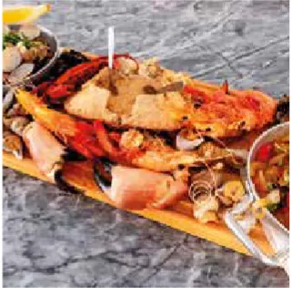

Chapter 5 · Matching food with wine
Prato de Marisco

Seafood platter with shellfish such as lobster, crayfish, mussels and clams are cooked and served cold on large platters, especially on the Atlantic coast.
Wine, not only a white such as vinho verde, vinho rosé or sparkling wine but also an Antão Vaz from the Alentejo goes very well with seafood platters them. If crustaceans are grilled, even a velvety-smooth red wine can be served.
Explanation: Seafood goes well with fresh white wine. Lipid-derived volatile flavours play a predominant role in the flavour of seafood, they do not pair with tannin-heavy wines but pair well with the fresh flavours of lean white wines.